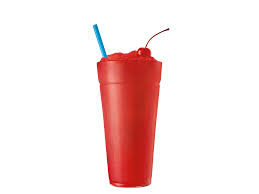
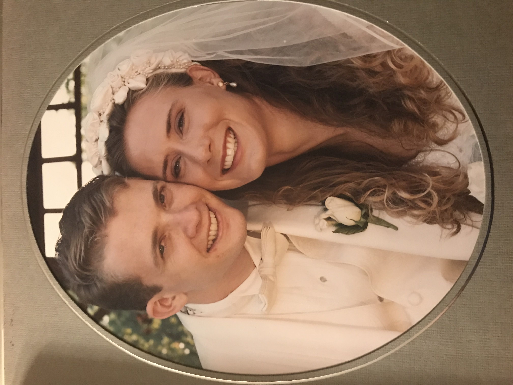
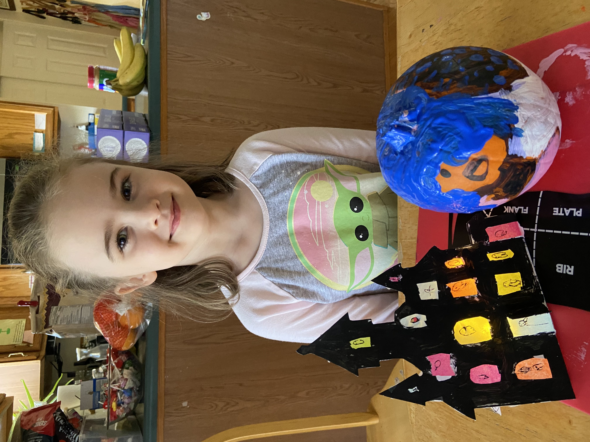
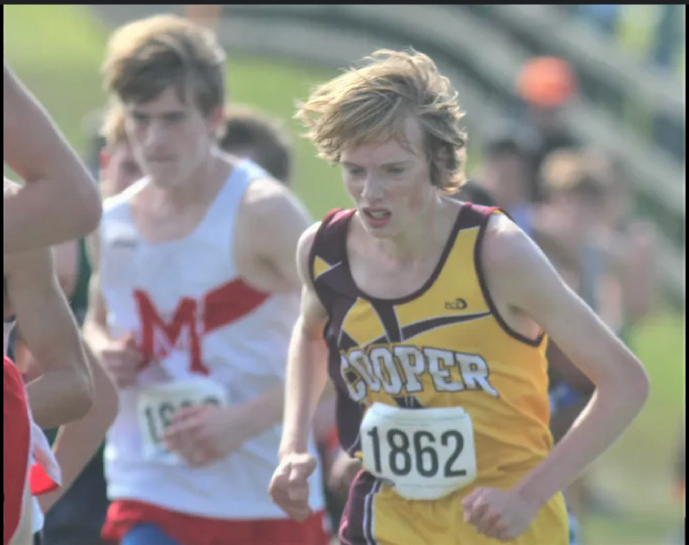
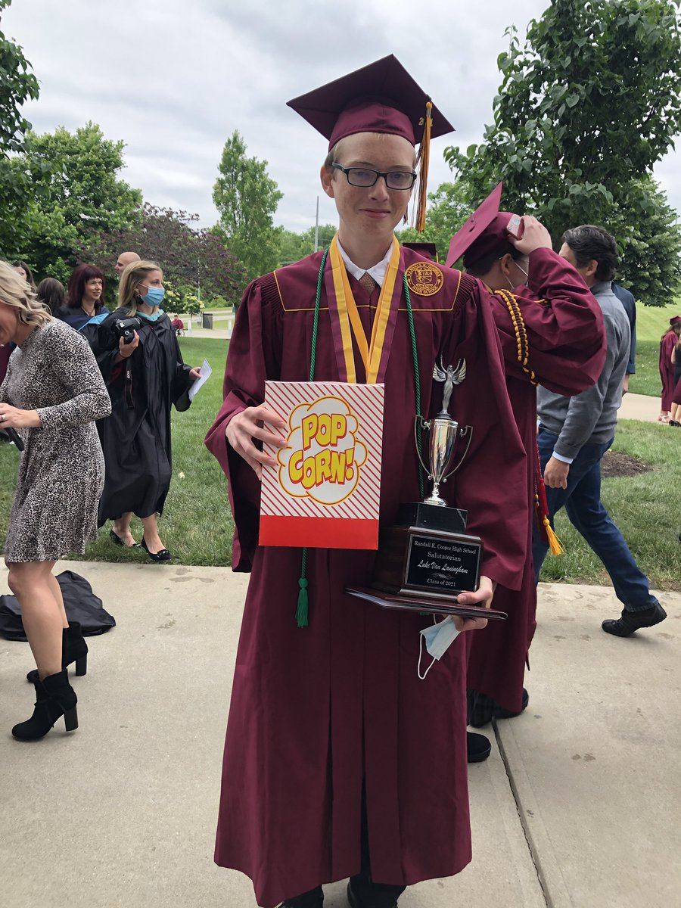

About me
- On July 21st 2003, when my parents were both 28 years old, I was born. I had an older sister Cecelia who is 2 years older than me
- When I was 5 years old, I got a little brother Paul. He enjoys running.
- When I was 13 years old, I got a little sister Alice.
- When I was 16, I held the American record for solving the Pyraminx, a combination puzzle. Below is the video of the accomplishment. At the time, it was my greatest accomplishment.
- In high school, I ran cross country. I was the fastest runner in my school for 2 of my 4 years.
- I have been very interested in mathematics my whole life as I have always believed it to be a perfect foundational model for the study and understanding of all things. I am currently majoring in Mathematics and Computer Science at Northern Kentucky University.
- I have worked at Sonic Drive in for the past year and a half. I believe it has taught me a lot about leadership and life (I recommend the slushes) 
| 
|
|


